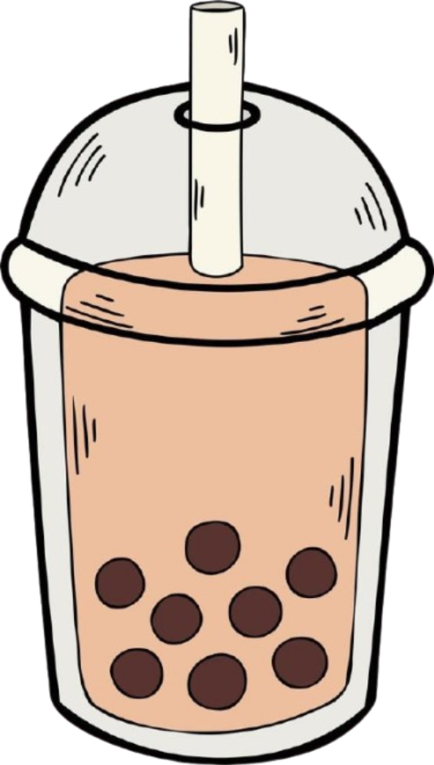

Brown Sugar Boba
Tapioca Pearls: These are the chewy, round balls that are the hallmark of boba.
Water: Used for cooking the tapioca pearls.
Brown Sugar: Used to sweeten and caramelize the tapioca pearls.
Taiwanese brown sugar is often used for a more authentic caramel flavor and faster melting.
Regular brown sugar can also be used, but the boba may be slightly lighter in color.
